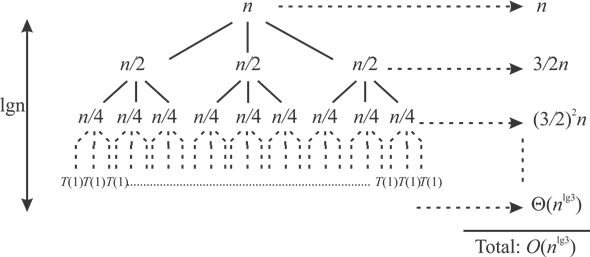
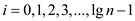
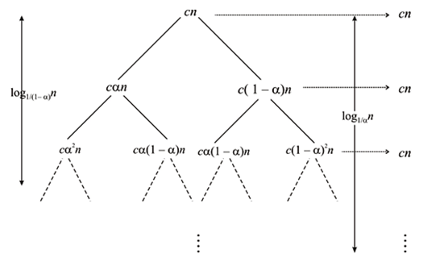
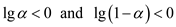
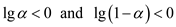

Consider the given recurrence:
Now, user have to determine the asymptotic upper bound on this given relation using a recurrence tree. It is already known that, the floor and ceil value usually do not matter in solving recurrences.
Consider the following recurrence tree for the given
recurrence. Here, the
value of  is assumed
exact power of 2 for convenience. It is chosen as exact power of 2
because all the sub-problems sizes became integer.
is assumed
exact power of 2 for convenience. It is chosen as exact power of 2
because all the sub-problems sizes became integer.

In the above recurrence tree,
• At each time when user go down one level, the subproblems sizes decreases by a factor 2, user eventually must reach a boundary condition .
• To calculate the depth of the tree, user obtain the sub-problem size for a node at depth i is .
• Therefore, the sub-problem size hits when or, .
Hence, the tree has levels.
Now, user have to determine the cost at each level of the tree.
At each level, the nodes increased 3 times as the node exists on
the above level. So the number of nodes at depth  is given
as.
is given
as.
It has already known that, “at each time when user go down one
level, the subproblems sizes decreases by a factor 2”, so each node
at depth , where
,
has a cost of .
Now, the total cost over all nodes at depth , will be
obtain after taking the product of the number of nodes at depth
and
the cost of each node at the depth .
Therefore,
At the bottom level where the depth is equal to , the number
of nodes will be given as, where the
contribution of the cost by each node is.
, the number
of nodes will be given as, where the
contribution of the cost by each node is.
Therefore, the total contribution of the cost at bottom level
is,
which is  Here, it is
assumed that the value of is
constant.
Here, it is
assumed that the value of is
constant.
Now, user have to sum up the costs over each levels to determine the cost for the entire tree:
Now, use the Sigma to add all the elements except the last one.

Now, use the geometric series formula, then user will obtain:
Now, evaluate the fraction,
Hence, the asymptotic upper bound on this given recurrence is given by.
A recursion tree to determine a good asymptotic upper bound on the recurrence
The costs over all levels to determine the cost for the entire tree:

Now, we can use the substitution method to verify that our guess was correct, that is is an upper bound for the recurrence .We want to show that for some constant.
This condition holds when n>0 and d=4.
Hence, asymptotic of the upper bound on the recurrence is verified.
• The recursion tree is used to calculate the time taken by any recursive algorithm for its recurrence relations.
• Recursion tree is the parse tree generated by using the recurrence relation.
• In the recursion tree method we first generate the tree for the given recurrence relation and then calculate the complexity for the base case that is and then from this user calculate the complexity for the n.
The general recurrence relation where is the number of sub-problems and is the size of each sub problem:
 …… (1)
…… (1)
Now consider the recurrence relation provided in the question.
…… (2)
The recursion tree for the recurrence relation in the equation (2) is as follows:
Here the tree is derived from the constant function n and divides into 4 sub-problems each having size of.
• For the simplification of the problem, ignore the constant term, that is, 2 in. The tree extends to its trivial case.
• The sub-problem size of node at depth i is n/2i .Thus, the sub-problem size hits n=1 when n/2i =1.
Length of the tree will be given as
or …… (3)
Taking the log of equation (3)
So,
(Since log 2 =1)
Each level has 4 times more nodes than the previous above. So, the number of leaves at level i are 4i.
Now, put the value of i, then the number of leaves at level i will be given as:
Simplifying further,
Since at i = log n, T(n/2i) = T(1) , so each leaf in contributing cost T(1). Total cost is n2 since it is assumed that T(1) is constant.
Now the equation can be written as:
Taking out constant n, user can solve this expression by taking only the first value of i which is 0 because c(1/2i) is a decreasing geometric progression.
Now, ignoring the decreasing constants
…… (4)
Since for upper bound, user can take the max of (n, n2). Hence, equation (4) shows a good asymptotic upper bound for the recurrence relation.
Now use substitution method to verify the solution of recurrence relation.
The upper bond of  of the
problem should be less than or equals to the terms at the right
hand side with
of the
problem should be less than or equals to the terms at the right
hand side with  as the outer
boundary
as the outer
boundary
So,
Hence recurrence tree method and the substitution method builds
up a complexity of
Recursion tree is a tree generated by calling the problem recursively. Each node in the rcursion tree reprsents the cost or time taken by a single sub problem. Recursion tree is used to find a good upper bound on a recurrsion. The total cost of the whole problem can be obatained by adding costs of all sub problems.
Finding upper bound on the using recursion tree:
The given recurence is …...(1)
Generate the recursion tree by calling T(n) recursively as follows:
Further calling the problem recursively, the following fully expanded tree is obtained.
Now the total cost =
=
= 
Therefore the is
the uppder bound on the given reucrrence .
The above upper bound can be verified using the substitution method as follows:
In the substitution method a solution is gussed every time and checked wether it is working or not.
Assume that is the solution for the given recurrence.
Thus, it is requried to show . Where the constant
Now substitute the result of the guess in the given recurrence.
Now make a furtehr smaller guess, that is , where the constant .
Thus,
The abvoe condition is true for .
Therefore it is verified that is
the uppder bound on the given reucrrence .
Recursion tree for the recurrence relation is:

Total: O(nlogn)
The longest simple path from the root to a leaf is since, when ,the height of the tree is ,the height of the part of the tree in which every node has two children is log3 n.
The cost at each level of the tree is exactly c*n. To find a lower bound on the cost of the algorithm, a lower bound is required on the height of the tree.
Since the values at each of these levels of the tree add up to cn, the recurrence relation is at least
The given recurrence is, .
The recursion tree for given recurrence is,
The cost at each level is the code of the node. There are levels in the tree. When the cost at each level is summed, the total cost of the algorithm is:
Now assume that n is divisible by a and ignore the ceiling functions, so the asymptotic complexity becomes:
The given recurrence is .
Let so that.
The recursion tree for given recurrence is,

The recursion tree is full for, each contributing cn. Therefore let the guess be .
It has levels, each contributing. Therefore, the guess is,.
Show by substitution method as follows:
To get the upper bound, show that d > 0.
.
This is same as.
As  .
.
Thus, , so that when multiplied, both sides of the inequality by this factor, the inequality is to be reversed.
The fraction on the right – hand side is a positive constant, and so it suffices to pick any value of d that is greater than or equal to this fraction.
To prove lower bound, show that T (n) for some d>0.
The same proof as for the upper bound can be used by substituting.
Thus, .
Therefore, .